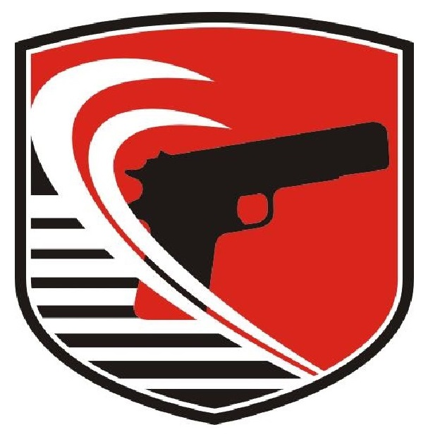

<mat-toolbar color="primary" class="header-toolbar">
    <!-- Logo gauche -->
    
  
    <!-- Titre centré -->
    <span class="title">Mon Projet Résultats</span>
  
    <!-- Logo droite (disparaît sur mobile) -->
    
  </mat-toolbar>
  